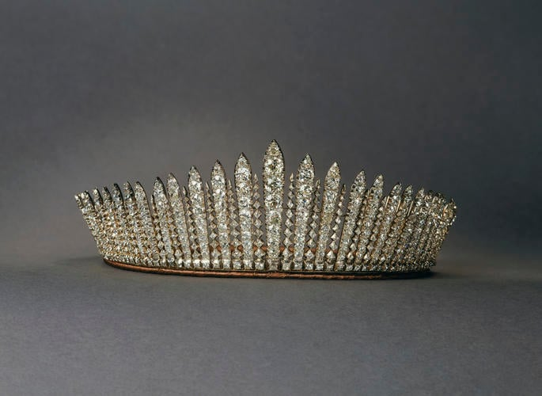
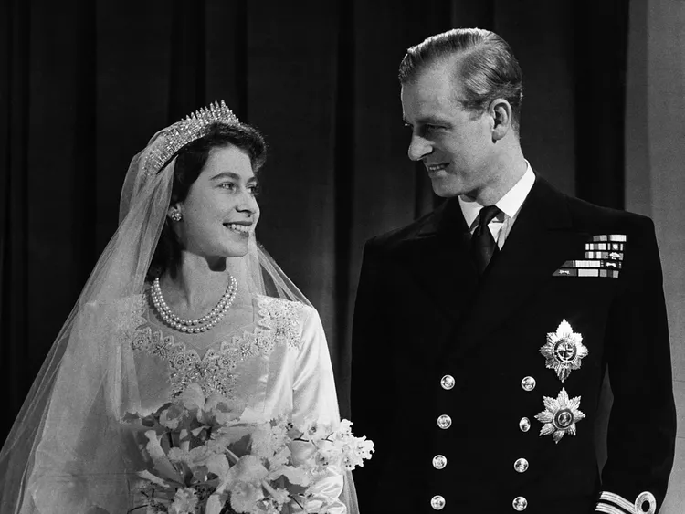
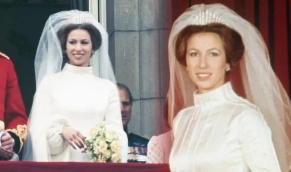
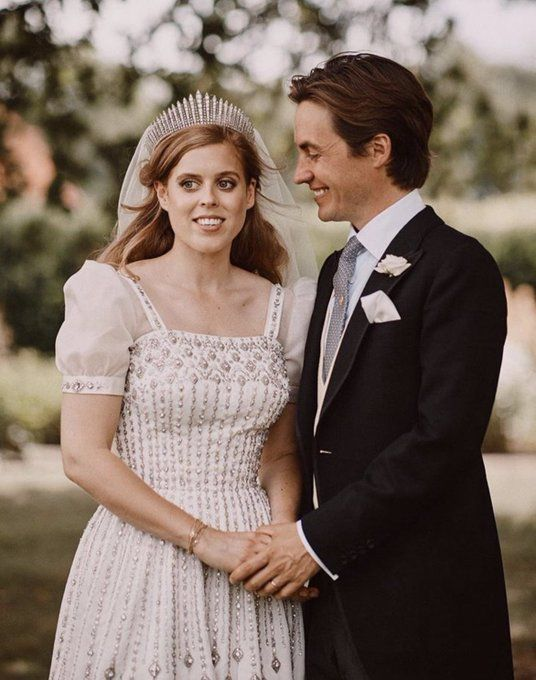

Queen Mary's Fringe Tiara
메리 왕비의 프린지 티아라

착용자 : 엘리자베스 2세 여왕,
앤 공주,
베아트리스 공주
조지5세의 정실부인인 테크의 메리가 소유했던 티아라로,

엘리자베스 2세 여왕과 그의 부군 그리스의 필리포스 왕자(에딘버러 공작 필립)의 결혼식에서
여왕이 착용한 이래

엘리자베스 2세 여왕과 에딘버러공의 유일한 딸
앤 공주의 전남편 마크 필립스와의
결혼식에서,

엘리자베스 2세 여왕과 에딘버러공의 차남 앤드류 왕자와 그의 전부인 요크 공작부인 사라 퍼거슨의 장녀
베아트리스 공주의 결혼식에서 3대를 이은 왕실 신부들이 착용하였다.